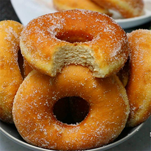

Home
Doughnut

Description
Doughnuts are deep-fried, sweet, and fluffy treats with a soft inside and a golden outside.
They are easy to make and can be enjoyed plain, sugared, or with different toppings like chocolate, cinnamon, or glaze. Doughnuts are perfect for breakfast, snacks, parties, and other special occasions.
Ingredients
- 3 cups all-purpose flour (or bread flour)
- ¼ cup sugar
- 1½ teaspoons instant yeast (or 1 tablespoon active dry yeast)
- ½ teaspoon salt
- ¼ cup warm milk (about 40°C / 105°F)
- ¼ cup warm water
- 22 large eggs
- 2 tablespoons unsalted butter (softened)
- 1 teaspoon vanilla extract (optional)
- Vegetable oil for deep frying
- Sugar, cinnamon, or glaze for coating (optional)
Steps
- In a bowl, mix the warm milk, warm water, 1 tablespoon of sugar, and yeast. Let it sit for 5–10 minutes until it becomes foamy.
- In a large bowl, add the flour, remaining sugar, salt, eggs, melted butter, vanilla extract (if using), and the yeast mixture. Knead for 8–10 minutes until you get a smooth, elastic dough.
- Cover the dough with a clean cloth and leave it in a warm place for 1–1½ hours, or until it doubles in size.
- Roll out the dough on a floured surface to about 1 cm thick. Use a doughnut cutter or two round cutters (one large, one small) to cut out the doughnuts.
- Place the shaped doughnuts on a tray, cover them, and let them rise for another 30–45 minutes.
- Heat the oil in a deep pan over medium heat. Fry the doughnuts in batches for about 1–2 minutes per side, or until golden brown.
- Drain the doughnuts on paper towels. While they are still slightly warm, roll them in sugar, cinnamon, or add your preferred toppings.